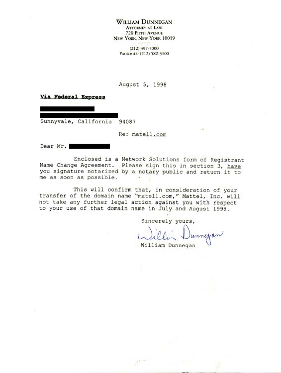

cease & desist letter #2 - Mattel v. Rotten
An archive of disturbing illustration
Part I. Cause
We registered matell.com (a name similar to, but not used by
Mattel Toy Corporation) and pointed it to rotten.com's page. This did
not sit well with Mattel, when unsuspecting people looking for pages about
Barbie Dolls were finding decapitations and whatnot. And incredibly,
Mattel was concerned customers would confuse our website with theirs!

Part II. Conclusion
Mattel agreed not to sue us if we handed the domain name to them. We
should mention that such a suit would be without merit. From a legal
standpoint, there is no overlap between what rotten.com does and Mattel,
and thus no trademark issue. Unless they are expanding into markets
which their mothers would not approve of.
[return to rotten.com]
|